Searching for Johnny Yacht Dice
Yacht is a game played with five dice. Players have twelve turns to score as many points as possible using the dice values to form hands. Each turn is played as such: 1. Roll all five dice 2. Select which dice to keep and reroll the rest. This action can be repeated once more. 3. Select a category used to score the hand and add it to your current point total. A player cannot select a category more than once a game.
There are 12 possible categories to select:
| Single Digit/Bonus Hands | Scoring |
|---|---|
| Ones | Only sum the dice that rolled a 1 |
| Twos | Only sum the dice that rolled a 2 |
| Threes | Only sum the dice that rolled a 3 |
| Fours | Only sum the dice that rolled a 4 |
| Fives | Only sum the dice that rolled a 5 |
| Sixes | Only sum the dice that rolled a 6 |
| Standard Hands | Scoring |
|---|---|
| Choice | Sum all dice values |
| Full House | If three dice share the same value and the remaining two are the same sum all dice otherwise score 0 |
| Four of a Kind | If four or more dice share the same value sum all dice otherwise score 0 |
| Binary Hands | Scoring |
|---|---|
| Small Straight | If four dice form a sequence of consecutive numbers score 15 otherwise score 0 |
| Large Straight | If all five dice form a sequence of consecutive numbers score 30 otherwise score 0 |
| Yacht | If all dice have the same value score 50 otherwise score 0 |
If a player scores 63 or more points from the Bonus Hand Categories, they receive an additional 35 points.
After a couple of games, ideas on optimal play will start to percolate in your head. Let’s explore them in python.
import itertools
import numpy as np
import matplotlib.pyplot as plt
from matplotlib.gridspec import GridSpecFirst we’ll create a list of all possible rolls and record their scores for each of the 12 hands.
rolls = list(''.join(i) for i in itertools.combinations_with_replacement('123456', r=5))
n_rolls = len(rolls)
hands = [
'ones','twos','threes',
'fours','fives','sixes',
'choice','fourKind','fullHouse',
'smallStraight','largeStraight','yacht'
]
n_hands = len(hands)
def evalFourKind(count):
return np.dot(countArray,range(1,7)) if (max(count) >= 4) else 0
def evalFullhouse(count):
if max(count) == 5:
return np.dot(countArray,range(1,7))
elif (3 in count) & (2 in count):
return np.dot(countArray,range(1,7))
else:
return 0
def evalSmallStraight(count):
straights = [[1,1,1,1,7,7],[7,1,1,1,1,7],[7,7,1,1,1,1]]
for i in range(3):
if sum(count[j] >= straights[i][j] for j in range(6)) >= 4:
return 15
return 0
def evalLargeStraight(count):
return 30 if ((count == [1,1,1,1,1,0]) or (count == [0,1,1,1,1,1])) else 0
def evalYacht(count):
return 50 if (5 in count) else 0
# store scores recieved based on roll and hand selected
base_hand_value_matrix = np.zeros((n_rolls, n_hands))
for idx in range(n_rolls):
roll = rolls[idx]
# convert roll to array with first entry storing number of ones rolled...
countArray = [roll.count(str(i)) for i in range(1, 7)]
base_hand_value_matrix[idx] = [
*[countArray[i] * (i+1) for i in range(6)],
np.dot(countArray, range(1, 7)),
evalFourKind(countArray),
evalFullhouse(countArray),
evalSmallStraight(countArray),
evalLargeStraight(countArray),
evalYacht(countArray)
]
print('There are {} possible rolls'.format(n_rolls))
# test scoring functions
idx = 20
print(f'hand = {rolls[idx]} \n----')
for i in hands:
print(f'{i} = {base_hand_value_matrix[idx, hands.index(i)]}')There are 252 possible rolls
hand = 11166
----
ones = 3.0
twos = 0.0
threes = 0.0
fours = 0.0
fives = 0.0
sixes = 12.0
choice = 15.0
fourKind = 0.0
fullHouse = 15.0
smallStraight = 0.0
largeStraight = 0.0
yacht = 0.0For each reroll we have to decide which dice to hold onto. Let’s create a list of all possible options.
# let 1 indicate we keep the dice, 0 indicate we reroll it
keeps = list([''.join(i) for i in itertools.product('01',repeat=5)])
n_keeps = len(keeps)
print('There are {} options during the reroll phase'.format(n_keeps))There are 32 options during the reroll phaseIt will be useful to know the probability of transitioning from one roll to another given which dice we choose to keep.
We can store the probabilities in a 252x32x252 matrix.
state_transition_matrix = np.zeros((n_rolls, n_keeps, n_rolls))
def frequencies(items):
counts = {}
for i in items:
counts[i] = counts.get(i, 0) + 1
return {k: v/len(items) for k, v in counts.items()}
# dict containing all possible rolls using i dice
freq = {}
for num_to_reroll in range(6):
freq[num_to_reroll] = list(itertools.product('123456',repeat=num_to_reroll))
for state in range(n_rolls):
roll = rolls[state] # what is our current roll
for action in range(n_keeps):
dice_to_keep = keeps[action] # select which dice to keep
kept_dice = ''.join(roll[i] for i in range(5) if dice_to_keep[i] == '1')
num_to_reroll = 5-len(kept_dice)
# get all possible new rolls with probability
new_rolls = [''.join(sorted(kept_dice + ''.join(new_roll))) for new_roll in freq[num_to_reroll]]
f = frequencies(new_rolls)
# store in state_transition_matrix
for new_roll in f:
new_state = rolls.index(new_roll)
state_transition_matrix[state, action, new_state] = f[new_roll]
initial_roll_probs = state_transition_matrix[0, 0, :]Let’s check what the probability of moving from five ones to a full house, ones over sixes. To do this we keep 3 ones and reroll the rest. We know this is 1/36, which equals 0.02777.
init_state = rolls.index('11111')
term_state = rolls.index('11166')
action = keeps.index('11100')
print(f'Probability of rolling "11166" from "11111" = {state_transition_matrix[init_state, action, term_state]}')Probability of rolling "11166" from "11111" = 0.027777777777777776Now let’s find the expected value of each hand prior to first roll, given we only make decisions to maximize said hand. We will need a policy to decide which dice to keep for two rerolls. The policy can be obtained using the transition probabilities and working backwards starting from the hand values after the last roll. We’ll use numpy’s einsum function to achieve this.
Recall state_transition_matrix is a 252x32x252 matrix whose i,j,k dimensions indicate the initial roll, the 32 options to keep dice before rerolling, and the terminal roll. The entries correspond to the probability of landing on the terminal roll given which dice we chose to keep from the initial roll. The base_hand_value_matrix is a 252x12 matrix whose k,l dimensions indicate the terminal roll before we chose which of the 12 hands to select, and entries indicate the value of that selection. When we input ‘ijk,kl->ijl’ into einsum, we are informing the function to return a 252x32x12 matrix with entry i,j,l corresponding to the dot product of two 252 length vectors state_transition_matrix[i,j,:] and base_hand_value_matrix[:,l], or the expected value of our current roll after selecting which dice to keep and which hand to score. Now consider always taking the action which maximizes the expected value, we can reduce our 252x32x12 matrix output to a 252x12 matrix. This matrix, called ex_val_1_reroll_left, stores the expected value of each hand given our current state with one reroll left. We can repeat the procedure by replacing base_hand_value_matrix with ex_val_1_reroll_left to get the expected values with two reroll left. Finally we can multiply a vector probabilities for each roll at the start of the round by ex_val_2_reroll_left to obtain our solution.
ex_val_1_reroll_left = np.einsum(
'ijk,kl->ijl',
state_transition_matrix,
base_hand_value_matrix
).max(axis=1)
ex_val_2_reroll_left = np.einsum(
'ijk,kl->ijl',
state_transition_matrix,
ex_val_1_reroll_left
).max(axis=1)
ex_val_preroll = state_transition_matrix[0,keeps.index('00000'),:] @ ex_val_2_reroll_left
dict(zip(hands,ex_val_preroll)){'ones': 2.106481481481479,
'twos': 4.212962962962959,
'threes': 6.319444444444442,
'fours': 8.425925925925918,
'fives': 10.532407407407414,
'sixes': 12.638888888888884,
'choice': 23.33333333333333,
'fourKind': 5.611263427672356,
'fullHouse': 7.013552612731233,
'smallStraight': 9.231634693554096,
'largeStraight': 7.83285050202343,
'yacht': 2.3014321262849484}Most of the time we will have more than one option when selecting a hand to score at the end of the round. We need to create a policy for all the possible combinations of available hands.
# let 0 indicate the hand is available to score, 1 indicates it is unavailabile
available_hands = [''.join(i) for i in itertools.product('01',repeat=n_hands)][:-1]
n_available_hands = len(available_hands)There are 4095 possible senarios for which hands are still available in a game that has not ended.Let’s create a policy whose only concern is to maximize the score received at the end a turn.
# useful for calcs
available_hand_matrix = np.zeros((n_available_hands, n_hands))
for a in range(n_available_hands):
ah = available_hands[a]
available_hand_matrix[a] = [np.NINF if i=='1' else 0 for i in list(ah)]
avail_hand_and_roll_indices = np.indices((len(available_hands),len(rolls)))
def create_simple_policy(hand_value_matrix):
'''Creates a greedy policy using a hand_value_matrix
Output :
state_policy_dict = {
0: (4095x252 matrix) w/ entries 0-11 referring to selecting an available hand at end of round
1: (4095x252 matrix) w/ entries 0-31 referring to which dice to keep at second reroll
2: (4095x252 matrix) w/ entries 0-31 referring to which dice to keep at first reroll
}
Globally Referenced Variables: state_transition_matrix, available_hand_matrix, avail_hand_and_roll_indices
'''
state_policy_dict = {}
state_value_dict = {}
# select hand at final step from those available which maximized score obtained in round:
b = hand_value_matrix[None,:,:]+available_hand_matrix[:,None,:]
state_policy_dict[0] = np.argmax(b,axis=2)
state_value_dict[0] = b[(*avail_hand_and_roll_indices,state_policy_dict[0])]
# calculate reroll policies and expected values:
# replace einsum with tensordot for speed improvement
a = np.tensordot(state_value_dict[0], state_transition_matrix, axes=((1),(2)))
state_policy_dict[1] = np.argmax(a,axis=2)
state_value_dict[1] = a[(*avail_hand_and_roll_indices,state_policy_dict[1])]
a = np.tensordot(state_value_dict[1], state_transition_matrix, axes=((1),(2)))
state_policy_dict[2] = np.argmax(a,axis=2)
#state_value_dict[2] = a[(*avail_hand_and_roll_indices,state_policy_dict[2])]
return state_policy_dict #, state_value_dict
old_state_policy_dict = create_simple_policy(base_hand_value_matrix)
%timeit create_simple_policy(base_hand_value_matrix)809 ms ± 63.7 ms per loop (mean ± std. dev. of 7 runs, 1 loop each)Now let’s check which actions our policy takes in certain scenarios.
rerolls_left = 2
init_state = rolls.index('11123')
ah_idx = available_hands.index('000000000000')
action = old_state_policy_dict[rerolls_left][ah_idx, init_state]
print(keeps[action])
rerolls_left = 2
init_state = rolls.index('11123')
ah_idx = available_hands.index('011111111111')
action = old_state_policy_dict[rerolls_left][ah_idx, init_state]
print(keeps[action])
rerolls_left = 0
init_state = rolls.index('11123')
ah_idx = available_hands.index('000000000000')
action = old_state_policy_dict[rerolls_left][ah_idx, init_state]
print(hands[action])00000
11100
choiceSo if we open the game rolling 1,1,1,2,3 our policy wants us to reroll everything. It also correctly determines to only keep ones when “ones” is the only hand left to score. Now the last piece of advice is alarming. When all hands are available it opts to score using choice. That gives us 8 out of a potential 30 points. If instead it opted for ones, it would leave just 2 points on the table. We’ve created a greedy algorithm!
Now let’s build some agents and test out their prowess.
class yachtDiceAgent:
def __init__(
self,
state_policy_dict,
init_availHandsId=0,
init_game_score=0,
init_bonus_progress=0,
bonus_progress_required=63,
bonus_reward=35
):
self.state_policy_dict = state_policy_dict
self.score_keeper = []
self.bonus_keeper = []
self.hand_keeper = []
self.init_availHandsId = init_availHandsId
self.init_game_score = init_game_score
self.init_bonus_progress = init_bonus_progress
self.bonus_progress_required = bonus_progress_required
self.bonus_reward = bonus_reward
def _rollDice(self, keep, diceRoll):
newRoll = ''
for i in range(5):
if keep[i] == '0':
newRoll += str(np.random.randint(1, 7))
else:
newRoll += diceRoll[i]
diceRoll = ''.join(sorted(newRoll))
diceRollId = rolls.index(diceRoll)
return diceRoll, diceRollId
def get_action(self, availHandsId, bonus_progress, rerolls_left, diceRollId):
return self.state_policy_dict[rerolls_left][availHandsId, diceRollId]
def simulate_game(self):
# initialize game
availHandsId = self.init_availHandsId
game_score = self.init_game_score
bonus_progress = self.init_bonus_progress
points = np.zeros(12)
turn = available_hands[availHandsId].count('1')
# play out game
while turn < 12:
# initial roll
# note: there's a noticable improvement to preformance by assigning diceRoll to local vs. instance
diceRoll, diceRollId = self._rollDice(keeps[0], '11111')
# two rerolls
for rerolls_left in [2,1]:
action = self.get_action(availHandsId, bonus_progress, rerolls_left, diceRollId)
diceRoll, diceRollId = self._rollDice(keeps[action], diceRoll)
# select hand
action = self.get_action(availHandsId, bonus_progress, 0, diceRollId)
availHandsId += 2**(11-action)
# end turn
points[action] += base_hand_value_matrix[diceRollId, action]
turn += 1
# evaluate score
bonus_progress = int(min(self.bonus_progress_required, self.init_bonus_progress + sum(points[:6])))
game_score += sum(points) + self.bonus_reward*(bonus_progress >= self.bonus_progress_required)
# record stats
self.score_keeper.append(game_score)
self.bonus_keeper.append(bonus_progress >= self.bonus_progress_required)
self.hand_keeper.append(points)
def simulate_games(self, n_sims):
for i in range(n_sims):
self.simulate_game()
def summarize_results(self, name='', color='b', n_bins=40, max_score=323):
n_sims = len(self.score_keeper)
avg_score = np.mean(self.score_keeper)
avg_bonus = 100*np.mean(self.bonus_keeper)
hand_matrix = np.vstack(self.hand_keeper)
fig = plt.figure(figsize=(10,5))
gs = GridSpec(3, 6, figure=fig)
fig.add_subplot(gs[:, :3])
for i in range(9):
fig.add_subplot(gs[i//3, (i%3)-3])
fig.axes[0].set_xlabel('Possible Scores')
fig.axes[0].set_ylabel('Count')
fig.axes[0].set_title("{}'s {} games played".format(name, n_sims))
fig.axes[0].hist(
self.score_keeper,
bins=np.linspace(0, max_score, n_bins),
alpha=0.5,
color=color,
edgecolor=color)
fig.axes[0].hist(
[self.score_keeper[i] for i in range(n_sims) if self.bonus_keeper[i] == 1],
bins=np.linspace(0, max_score, n_bins),
color=color,
edgecolor=color,
label='got bonus: {:.0f}%'.format(avg_bonus))
x = fig.axes[0].get_legend_handles_labels()
y = ['+ve {}: {:.0f}%'.format(hands[i][:5],100*np.mean(hand_matrix[:,i] != 0)) for i in range(7,12)]
y = ['avg score: {:.2f}'.format(avg_score)] + y
x = fig.axes[0].legend(
[x[0][0] for i in range(len(y)+1)],
[x[1][0],*y],
handlelength=0.7,
prop={'family':'monospace'}
)
for i in range(len(y)):
x.legendHandles[i+1].set(visible=False)
for i in range(1, 10):
fig.axes[i].hist(
hand_matrix[:,i-1]/(i if i<=6 else 1),
bins=np.arange(-.5,6.5) if i<=6 else np.arange(-0.5,31.5),
density=1,
histtype='bar' if i<=6 else 'stepfilled',
alpha=0.5,
color=color,
edgecolor=color
)
fig.axes[i].set_title(hands[i-1])
plt.tight_layout()
#plt.savefig('{}'.format(name.replace(' ', '-').lower()), facecolor='white')
plt.show()class randomYachtDiceAgent(yachtDiceAgent):
def __init__(self, state_policy_dict, init_availHandsId=0, init_game_score=0, init_bonus_progress=0, random_hands=True):
super().__init__(state_policy_dict, init_availHandsId, init_game_score, init_bonus_progress)
self.random_hands = random_hands
def get_action(self, availHandsId, bonus_progress, rerolls_left, diceRollId):
if rerolls_left == 0:
if self.random_hands:
x = [i for i in range(12) if available_hands[availHandsId][i] == '0']
return x[np.random.randint(len(x))]
else:
return self.state_policy_dict[0][availHandsId, diceRollId]
else:
return np.random.randint(32)Our first bot makes decisions completely at random.
bot = randomYachtDiceAgent(old_state_policy_dict)
bot.simulate_games(10000)
bot.summarize_results(name='Random Agent', color='g')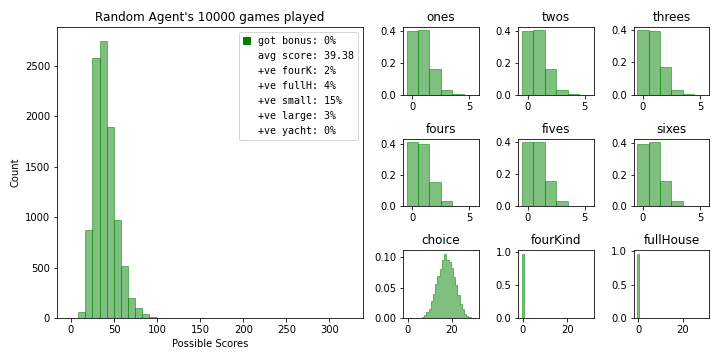
This is a bit mean so we’ll update it to only randomize the rerolls so it can select the highest scoring hand at the end of the round.
bot = randomYachtDiceAgent(old_state_policy_dict, random_hands=False)
bot.simulate_games(10000)
bot.summarize_results(name='Semi-Random Agent', color='g')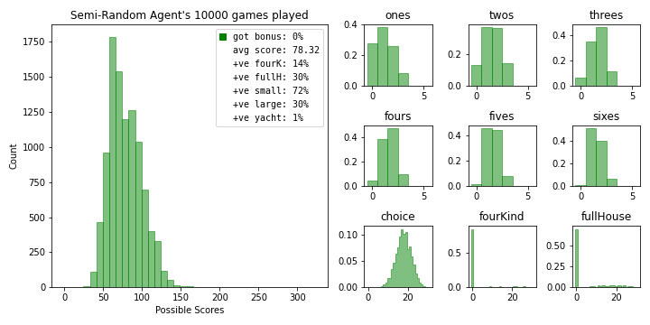
Our next bot operates using the greedy policy we’ve created. It scores significantly higher than our random agent.
bot = yachtDiceAgent(old_state_policy_dict)
bot.simulate_games(10000)
bot.summarize_results(name='Greedy Agent', color='b')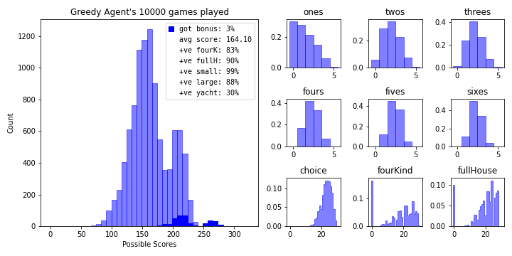
As previously addressed, greed is not always optimal. We need to teach the bots to weigh long term opportunities against cashing in on short term rewards. To do this we’ll adjust the behaviour of new agents by altering their preceived hand values prior to creating a greedy policy. Let’s make the next bot by subtracting the expected value of each hand at the start of the turn from it’s original value. It scores roughly 15 points higher on average.
new_hand_value_matrix = base_hand_value_matrix - ex_val_preroll
bot = yachtDiceAgent(create_simple_policy(new_hand_value_matrix))
bot.simulate_games(10000)
bot.summarize_results(name='Expected Value Agent', color='r')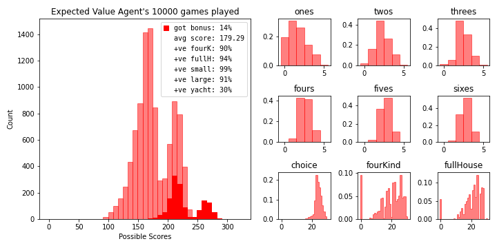
Our new bot obtains the bonus roughly 10% of the time. Factoring the bonus into our decision making process is definetly worth exploring if we want to best our new average. Let’s try to make a bot that prioritizes reaching the bonus so we can see just how frequently one can obtain it. We’ll restrict ourselves to only manipulating the base hand values without including additional information like the current bonus progress in our transformations. This is suboptimal but keeps the policy creation time at a minimum.
Here’s a naive approach. The bonus requires scoring a total of 63 points from all the single digit hands. 63 can be achieved by scoring at least a 3 count for each digit, 63 = 3*(1+2+3+4+5+6). Let’s transform the base hand values such that our bot overvalues anything higher than a 3 count and fears picking anything less.
x = base_hand_value_matrix.copy()
# punish anything below a 3 count for bonus hands
x[x < 3 * np.arange(1,13) * (np.arange(12) < 6)] -= 100
# reward anything above a 3 count for bonus hands
x[x >= 3 * np.arange(1,13) + 100*(np.arange(12) >= 6)] += 100
bot = yachtDiceAgent(create_simple_policy(x))
bot.simulate_games(10000)
bot.summarize_results(name='Bonus Agent', color='orange')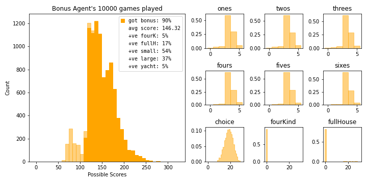
# lets check the prob of getting at least a 3 count using the same method for finding the expected values but
# convert base_hand_value_matrix into a binary matrix with ones only at acceptable results
x = base_hand_value_matrix-base_hand_value_matrix.max(axis=0)*(3/5)>=0
x *= (np.arange(12) < 6)
prob_1_reroll_left = np.einsum('ijk,kl->ijl',state_transition_matrix,x.astype(int)).max(axis=1)
prob_2_reroll_left = np.einsum('ijk,kl->ijl',state_transition_matrix,prob_1_reroll_left).max(axis=1)
prob_preroll = state_transition_matrix[0,keeps.index('00000'),:] @ prob_2_reroll_left
prob_preroll[0]0.35484999797783096The bonus agent achieves it’s goal roughly 90% of the time. This might seem high if you consider the probability of getting a 3 count above but there’s a lot of mechanisms working in our favour. First, the bot uses the six non bonus hands to dump any undesirable results. Second, the probability above is calculated as if we chose the hand prior to seeing the initial roll for the round, in game we use the knowledge obtained from that roll to determine what to pursue. Finally, scoring higher than a 3 count can ease the minimum count required for other hands.
Let’s try one last bot whose only desire is to pursue the perfect game.
# lets check the prob of getting a max score for each hand using same method for finding the expected values but
# convert base_hand_value_matrix into a binary matrix with ones only at acceptable results
mask = base_hand_value_matrix-base_hand_value_matrix.max(axis=0)==0
prob_1_reroll_left = np.einsum('ijk,kl->ijl',state_transition_matrix,mask.astype(int)).max(axis=1)
prob_2_reroll_left = np.einsum('ijk,kl->ijl',state_transition_matrix,prob_1_reroll_left).max(axis=1)
prob_preroll = state_transition_matrix[0,keeps.index('00000'),:] @ prob_2_reroll_left
dict(zip(hands,prob_preroll)){'ones': 0.013272056011374675,
'twos': 0.01327205601137467,
'threes': 0.013272056011374662,
'fours': 0.013272056011374652,
'fives': 0.013272056011374659,
'sixes': 0.013272056011374652,
'choice': 0.013272056011374652,
'fourKind': 0.013272056011374652,
'fullHouse': 0.013272056011374652,
'smallStraight': 0.6154423129036065,
'largeStraight': 0.2610950167341143,
'yacht': 0.04602864252569902}bot = yachtDiceAgent(create_simple_policy(mask))
bot.simulate_games(10000)
bot.summarize_results(name='Perfect Game Agent', color='purple')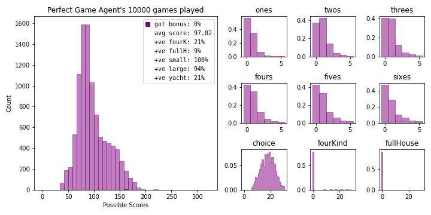
so close…
To defeat our current champion we’ll need to spend more time thinking up which reward transformations can express potentially desireable behaviours. Let’s plot the expected value agent’s transformations. What kind of behaviour do you expect from the bot if it finished rolling with five sixes? Would you rather select 30 points and a chunk of bonus progress by picking “sixes” or cash in on 50 points from a yacht hand? What about “sixes” vs four of a kind? Are you more certain in your decision if you rolled five ones instead? What determines when we use a binary hand to dump an unwanted roll? How can we tinker with the rewards to answer these questions?
possible_hand_scores = [np.unique(base_hand_value_matrix[:,i]) for i in range(12)]
n_possible_values = 0
for i in range(12):
n_possible_values += len(possible_hand_scores[i])
print(f"There's a total of {n_possible_values} values that can be manipulated to produce new policies.")There's a total of 120 values that can be manipulated to produce new policies.def plot_reward_transformations(hand_value_matrix):
fig, ax = plt.subplots(1, 3, sharey=True, figsize=(12,6))
fig.subplots_adjust(wspace=0)
titles = ['Bonus Hands','Standard Hands','Binary Hands']
x_labels = ['counts','base hand value','achieved']
x_ticks = [np.arange(6),np.linspace(0,30,6),[0,1]]
fig.suptitle('Reward Transformations')
ax[0].set_ylabel('new hand value')
for i in range(12):
j = i//6 + i//9
denom = i+1 if j == 0 else 1 if j == 1 else max(possible_hand_scores[i])
ax[j].scatter(
possible_hand_scores[i]/denom,
sorted(np.unique(hand_value_matrix[:,i])),
label=hands[i])
ax[j].set_xticks(x_ticks[j])
ax[j].set_xlabel(x_labels[j])
ax[j].legend()
ax[j].set_title(titles[j])
#plt.savefig('reward-transform', facecolor='white')
plot_reward_transformations(new_hand_value_matrix)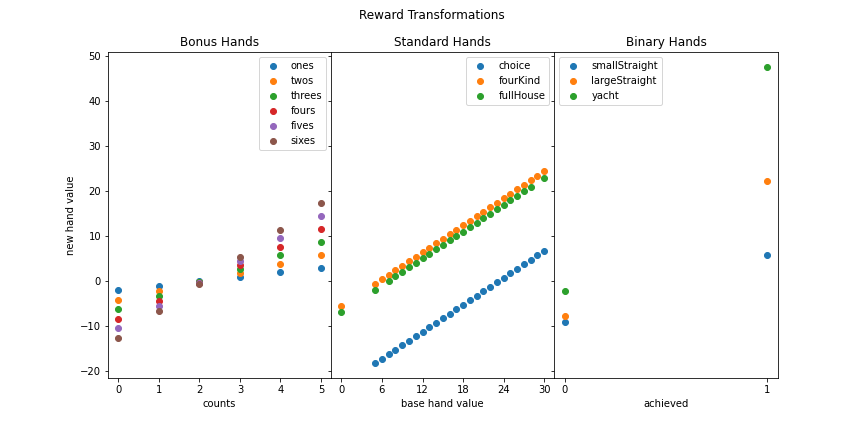
Let’s inspect how the bot orders selecting each available hand after rolling five sixes. We’ll also play out 1000 games after selecting each hand as if we rolled it on first turn.
roll = '66666'
values = base_hand_value_matrix[rolls.index(roll)]
new_values = new_hand_value_matrix[rolls.index(roll)]
scores = []
# create agent
bot = yachtDiceAgent(create_simple_policy(new_hand_value_matrix))
for i in range(12):
# init game after first turn
bot.init_availHandsId = available_hands.index(''.join(['1' if k == i else '0' for k in range(12)]))
bot.init_game_score = values[i]
bot.init_bonus_progress = values[i]*(i < 6)
bot.score_keeper = []
bot.simulate_games(1000)
scores.append(np.mean(bot.score_keeper))
fig, ax = plt.subplots(figsize=(10, 4))
ax.set_title("First Turn diceRoll: {}".format(roll), fontweight='bold')
ax.set_xlabel("average final score after selection in 1000 games")
ax.yaxis.set_visible(False)
ax1 = ax.twiny()
ax1.set_ylim(-0.2, 3.2)
ax1.set_xlabel("bot's preceived hand value")
ax1.plot(
sorted(new_values),
3*np.ones_like(new_values),
linewidth=1,
solid_capstyle='round',
color='k',
zorder=-1
)
ax.plot(
sorted(scores),
np.zeros_like(scores),
linewidth=1,
solid_capstyle='round'
,color='k',
zorder=-1
)
for i in range(12):
temp_x = min(new_values) + (max(new_values) - min(new_values))*(scores[i] - min(scores)) / (max(scores) - min(scores))
ax1.plot(
[new_values[i], new_values[i], temp_x, temp_x],
[3, 2, 1, 0],
'-.' if i > 5 else '-',
label=hands[i]
)
ax1.scatter(new_values[i], 3, marker=7 if i > 5 else 6)
ax.scatter(scores[i], 0, marker=6 if i > 5 else 7)
ax1.legend(
bbox_to_anchor=(1.01, .5),
loc='center left'
);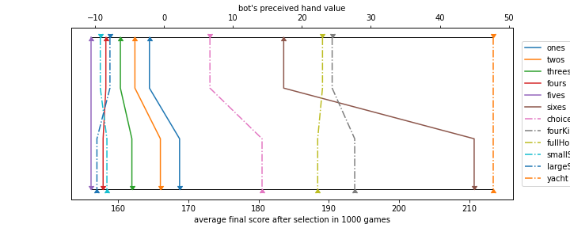
This bot won’t pick sixes over full house or four of a kind but if we intervene to force sixes the bot ends up improving greatly. How can we transform the preceived hand values to accommodate this? Can we attempt to do this automatically?
Let’s convert each hand value to it’s average final score by following the rungs on the ladder plot above. We’ll need to do this for every roll then repeat to see if we can converge on a final strategy.
num_games = 1000
num_iters = 5
results = {i: {'n_sims':num_games*(i+1),'avg_score':0} for i in range(num_iters)}
new_hand_value_matrix = base_hand_value_matrix.copy()
bot = yachtDiceAgent(create_simple_policy(new_hand_value_matrix))
for t in results:
n_sims = results[t]['n_sims']
# keep newly calculated hand values here before updating hand_value_matrix
store_hand_value = {}
# bonus hands
for i in range(1,7):
store_hand_value[i] = []
# initiate sims from this gamestate (after first turn)
bot.init_availHandsId = available_hands.index(''.join(['1' if k == i else '0' for k in range(1,13)]))
bot.bonus_keeper = []
bot.score_keeper = []
bot.hand_keeper = []
bot.simulate_games(n_sims)
for j in range(6):
hand_matrix = np.vstack(bot.hand_keeper)
# add bonus progress achieved in simulation with bonus progress from initiated hand
bonus_prog = hand_matrix[:,:6].sum(axis=1) + np.tile(i*j,n_sims)
store_hand_value[i].append(
np.mean(
bot.score_keeper + np.tile(i*j,n_sims) + np.where((bonus_prog >= 63) != bot.bonus_keeper, 35, 0)
)
)
# non bonus hands
for i in range(7,13):
# initiate sims from this gamestate (after first turn with best possible score)
bot.init_availHandsId = available_hands.index(''.join(['1' if k == i else '0' for k in range(1,13)]))
bot.score_keeper = []
bot.simulate_games(n_sims)
store_hand_value[i] = possible_hand_scores[i-1] + np.mean(bot.score_keeper)
# replace hand values
new_hand_value_matrix = np.zeros_like(base_hand_value_matrix)
for i in store_hand_value:
for j in range(len(store_hand_value[i])):
new_hand_value_matrix[np.where(base_hand_value_matrix[:,i-1] == possible_hand_scores[i-1][j]), i-1] = store_hand_value[i][j]
# create and evaluate new bot
bot = yachtDiceAgent(create_simple_policy(new_hand_value_matrix))
bot.simulate_games(n_sims)
results[t]['avg_score'] = np.mean(bot.score_keeper)
print('{} in {} games'.format(results[t]['avg_score'], n_sims))
bot.summarize_results(name='Contender', color='teal')181.365 in 1000 games
184.879 in 2000 games
186.61633333333333 in 3000 games
187.674 in 4000 games
186.2746 in 5000 games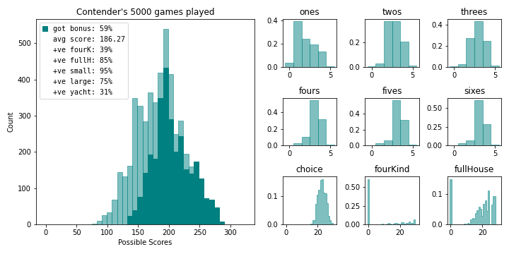
plot_reward_transformations(final_hand_value_matrix)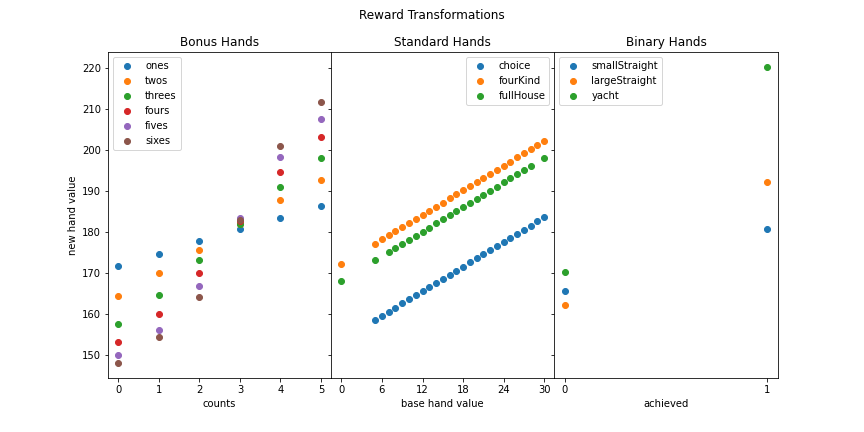
We’ve bested our previous record by roughly 7 points! By plotting the reward transformations, two changes become apparent. First, our procedure naturally incorporated the bonus value into the single digit hands. Second, the new agent will dump a bad round on a small straight before a large straight. It is also noteworthy that all the previous agents will converged to this final one (even the perfect game agent).
Is this the best we can do? No, our bots are restricted to static hand values ignoring any information gained during the game. This is a pretty good result managed within 3 minutes. Let’s see what happens if we include available hands and bonus progress in the decision making process. We’ll acheive this in a similar manner except the new rewards at each state will be the sum of the current reward and expected value of total points from the resulting next state to the end of the game. We’ll be working backwards from the last round to the first calculating new policy along the way. This will take a long time if we’re not careful, I’ve managed to reduce it to roughly 10 minutes by combining states that will have identical strategies.
# get available hands for each turn number
available_hands_in_turn = {i:[] for i in range(12)}
for i in range(n_available_hands):
available_hands_in_turn[available_hands[i].count('1')].append(i)
# include bonus progress in representing state
# determine all relevent bonus progress values for each available hands combo
# relevent = changes strategy and is possible to obtain for said round
# matrix to map any irrelevent states to relevent ones
relevent_bonus_mapping = np.zeros((n_available_hands, 64))
relevent_bonus_testing = {}
for i in range(n_available_hands):
avail_bonus_hands = [j+1 for j in range(6) if available_hands[i][j] == '0']
used_bonus_hands = [j for j in range(1,7) if j not in avail_bonus_hands]
need_to_test_progs = sorted(list(set([0] + [63 - min(63, sum(j)) for j in itertools.product(*[i*np.arange(6) for i in avail_bonus_hands])])))
maximum_possible_prog = min(63, 5*sum(used_bonus_hands))
relevent_bonus_testing[i] = [i for i in need_to_test_progs if i <= maximum_possible_prog]
x = relevent_bonus_testing[i] + [64]
for j in range(len(x)-1):
relevent_bonus_mapping[i, x[j]:x[j+1]] = x[j]
# include post final round
relevent_bonus_mapping = np.vstack([relevent_bonus_mapping, relevent_bonus_mapping[4094]])
print(f'number of states to calculate: {sum(len(relevent_bonus_testing[i]) for i in relevent_bonus_testing)} out of {n_available_hands*64}')number of states to calculate: 119870 out of 262080# initiate policy dict
state_policy_dict = {}
for i in range(3):
state_policy_dict[i] = np.transpose(np.repeat(old_state_policy_dict[i][:,:,np.newaxis], 64, axis=2), axes=[0,2,1])
BranchingStates = {}
# end game calc bonus
BranchingStates[4095,0] = 0
BranchingStates[4095,63] = 35
for turn in np.arange(11,-1,-1):
print(turn)
for ah_idx in available_hands_in_turn[turn]:
for bp_idx in relevent_bonus_testing[ah_idx]:
# make new policy by imputing hand values
x = np.zeros_like(base_hand_value_matrix) - 1
hand_options = [i for i in range(12) if available_hands[ah_idx][i] == '0']
for h in hand_options:
next_ah_idx = ah_idx + 2**(11-h)
for p in possible_hand_scores[h]:
next_bp_idx = int(min(63, bp_idx + p*(h < 6)))
adj_next_bp_idx = relevent_bonus_mapping[next_ah_idx, next_bp_idx]
x[np.where(base_hand_value_matrix[:,h]==p),h] = (p + BranchingStates[next_ah_idx, adj_next_bp_idx])
# get all affected bonus progresses
y = sum(1 for j in relevent_bonus_testing[ah_idx] if bp_idx >= j)
if y >= len(relevent_bonus_testing[ah_idx]):
z = 64
else:
z = relevent_bonus_testing[ah_idx][y]
# make new policy and calculate expected value of state
state_policy_dict[0][ah_idx, bp_idx:z, :] = np.argmax(x, axis=1)
value_0 = x.max(axis=1)
a = np.einsum('i,jki->jk',value_0, state_transition_matrix)
state_policy_dict[1][ah_idx, bp_idx:z, :] = np.argmax(a, axis=1)
value_1 = a.max(axis=1)
a = np.einsum('i,jki->jk',value_1, state_transition_matrix)
state_policy_dict[2][ah_idx, bp_idx:z, :] = np.argmax(a, axis=1)
value_2 = a.max(axis=1)
BranchingStates[ah_idx, bp_idx] = value_2 @ initial_roll_probs
print(f'This bot\'s expected score is {BranchingStates[0,0]}')This bot's expected score is 191.77436918834172plot_reward_transformations(x)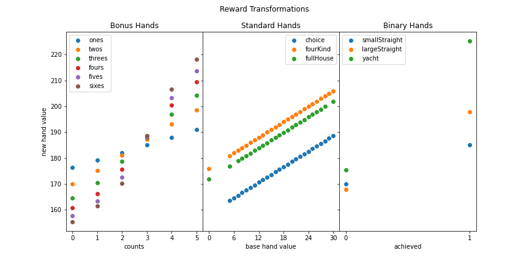
The final bot’s first round reward transformations look very similar to our previous contender.
class newYachtDiceAgent(yachtDiceAgent):
def __init__(self, state_policy_dict, init_availHandsId=0, init_game_score=0, init_bonus_progress=0):
super().__init__(state_policy_dict, init_availHandsId, init_game_score, init_bonus_progress)
def get_action(self, availHandsId, bonus_progress, rerolls_left, diceRollId):
return self.state_policy_dict[rerolls_left][availHandsId, bonus_progress, diceRollId]new_bot = newYachtDiceAgent(
state_policy_dict,
)
new_bot.simulate_games(10000)
new_bot.summarize_results(name='Johnny Yacht Dice', color='royalblue')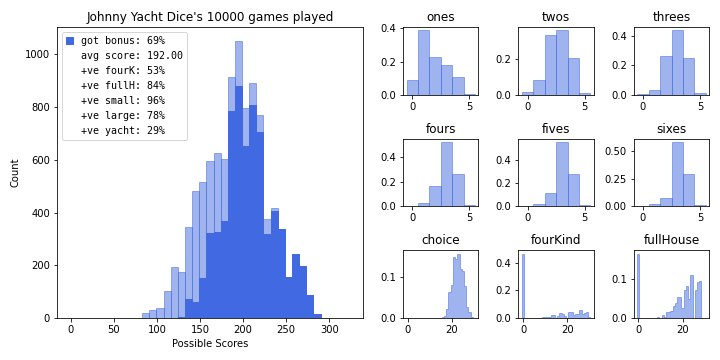
One last thing, we can calculate the probability of getting a perfect game now.
perfect_hand_value_matrix = (base_hand_value_matrix-base_hand_value_matrix.max(axis=0)==0).astype(int)
perfect_policy_dict = {}
for i in range(3):
perfect_policy_dict[i] = old_state_policy_dict[i].copy()
BranchingPerfects = {}
BranchingPerfects[4095] = 1
for turn in np.arange(11,-1,-1):
for ah_idx in available_hands_in_turn[turn]:
x = np.zeros_like(base_hand_value_matrix) - 1
hand_options = [i for i in range(12) if available_hands[ah_idx][i] == '0']
for h in hand_options:
x[:,h] = 0
next_ah_idx = ah_idx + 2**(11-h)
x[np.where(perfect_hand_value_matrix[:,h]==1),h] = 1*BranchingPerfects[next_ah_idx]
# make new policy and calculate expected value of state
perfect_policy_dict[0][ah_idx, :] = np.argmax(x, axis=1)
value_0 = x.max(axis=1)
a = np.einsum('i,jki->jk',value_0, state_transition_matrix)
perfect_policy_dict[1][ah_idx, :] = np.argmax(a, axis=1)
value_1 = a.max(axis=1)
a = np.einsum('i,jki->jk',value_1, state_transition_matrix)
perfect_policy_dict[2][ah_idx, :] = np.argmax(a, axis=1)
value_2 = a.max(axis=1)
BranchingPerfects[ah_idx] = value_2 @ initial_roll_probs
print(f'It will take on average {1/BranchingPerfects[0]} games to achieve a perfect one')It will take on average 276939929515183.94 games to achieve a perfect one